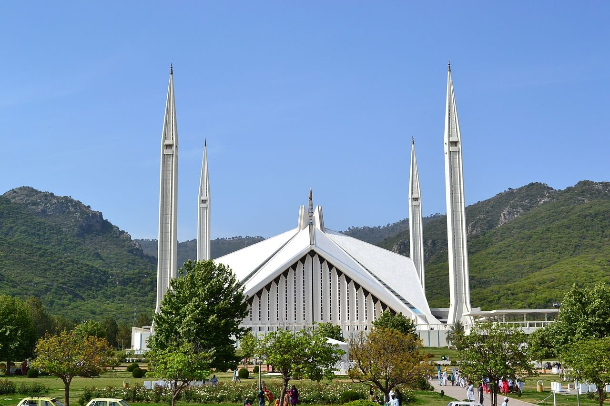

Once considered the biggest mosque in the world, the stunning Faisal Mosque in Islamabad is a sight to behold. The design of the mosque by architect Vedat Dalokay offers a combination of Turkish and Arabian influences Saudi King Faisal allotted a colossal grant of $120 million for the construction of a mosque in Pakistan when he paid a historic visit to the country in 1966. A competition for the design of the mosque was held, and among 43 authentic proposals from 17 countries, Turkish architect Vedat Dalokay’s design for the mosque was deemed worthy of winning the contest.
Land near the base of Margalla Hills was assigned by the Pakistani government for the construction of the Faisal Mosque. However, the Saudi king was assassinated in March 1975 in Riyadh, and the foundation of the building could only be laid a year later by his successor King Khalid bin Abdulaziz Al Saud. Upon this, the Pakistani government named the mosque and the road leading to the site after the late King Faisal. Once considered the biggest mosque in the world, the Faisal Mosque was conceived as the National Mosque of Pakistan. The project of the mosque was completed in 1986. The building of the holy construction used to house the International Islamic University some years ago. But the university relocated to a new campus in 2000.
Faisal Mosque is the national mosque of Pakistan, located in capital Islamabad.It is the sixth-largest mosque in the world and the largest within South Asia, located on the foothills of Margalla Hills in Pakistan's capital city of Islamabad. The mosque features a contemporary design consisting of eight sides of concrete shell and is inspired by the design of a typical Bedouin tent. A major tourist attraction in Pakistan, the mosque is a contemporary and influential piece of Islamic architecture. Construction of the mosque began in 1976 after a $28 million grant from Saudi King Faisal, whose name the mosque bears. The unconventional design by Turkish architect Vedat Dalokay was selected after an international competition. Without a typical dome, the mosque is shaped like a Bedouin tent, surrounded by four 260 feet (79 m) tall minarets. The design features eight-sided shell shaped sloping roofs forming a triangular worship hall which can hold 10,000 worshippers. Combined the structure covers an area of 33 acres (130,000 m2; 1,400,000 sq ft), the mosque dominates the landscape of Islamabad.[6] It is situated at the north end of Faisal Avenue, putting it at the northernmost end of the city and at the foot of Margalla Hills, the westernmost foothills of the Himalayas. It is located on an elevated area of land against a picturesque backdrop of the national park. Faisal Mosque was the largest mosque in the world from 1986 until 1993 when it was overtaken by the mosques in Saudi Arabia. Faisal Mosque is now the sixth largest mosque in the world in terms of capacity.